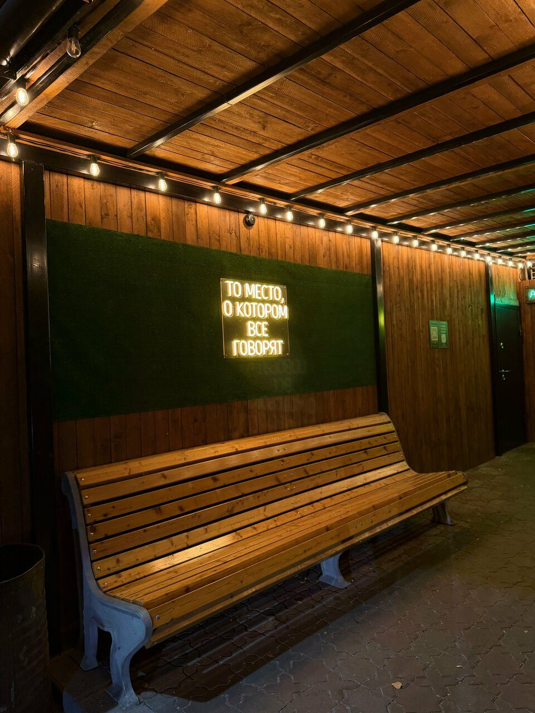
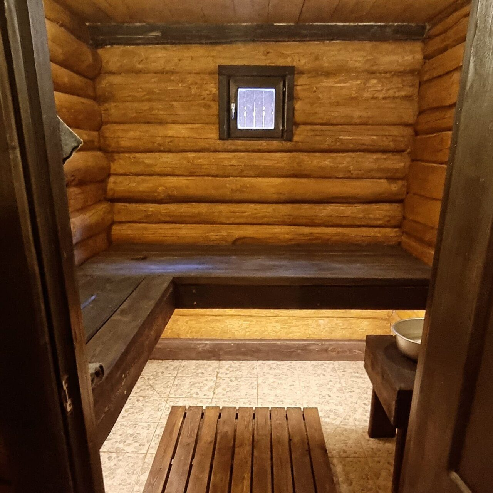
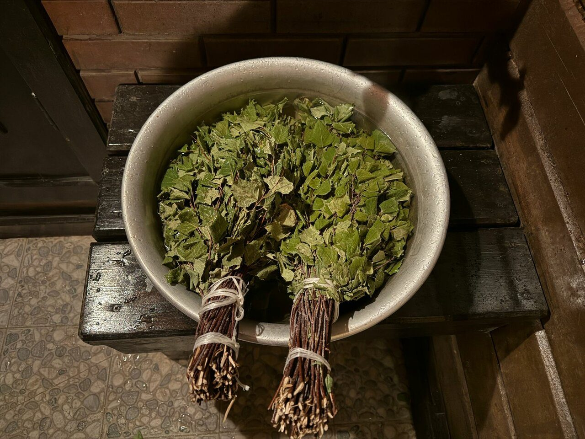
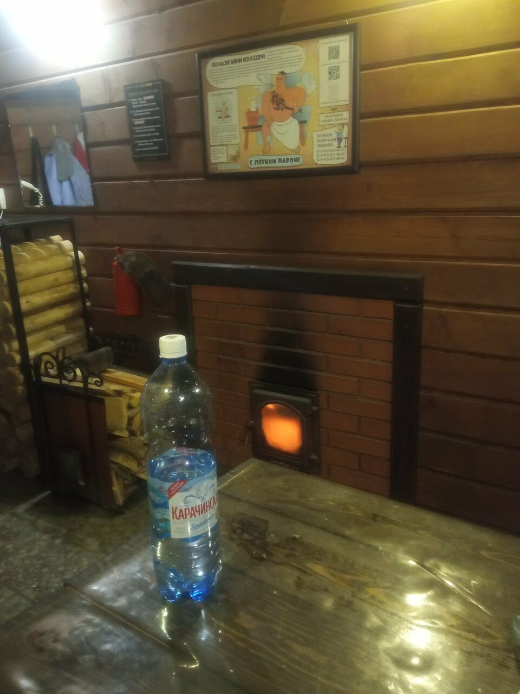
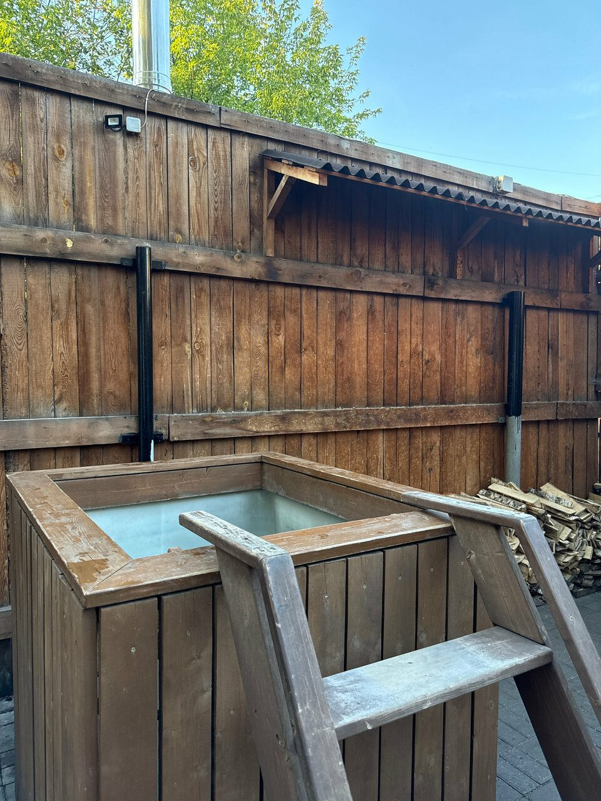
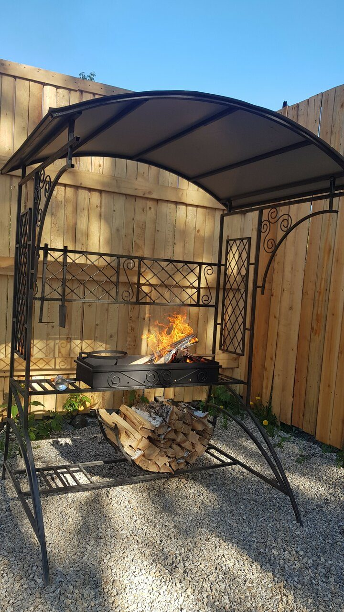
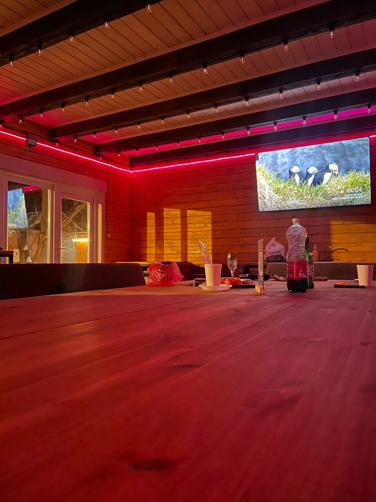

Побывал практически в каждой коммерческой бане Томска. Этот банный комплекс — один из лучших, можно сказать, что лучший в городе.

Отдельные бани с парной на дровах, тёплым уличным чаном, купелью, мангалом и беседкой с караоке. Почасовая аренда — в черте города.
★★★★★
450 оценок в Яндекс Картах
за час



«Баня жаркая, много дров в твоём распоряжении, чистота, чайник, чай, сахар и посуда в наличии», — Константин.
«Тёплый чан и снежок — это классно перезагружает организм!» Чан на улице подогревают на дровах: можно попросить горячий или прохладный.

Подогревается на дровах, обшит деревом — зимой не ледяной на ощупь.

У бани — свой дворик, беседка и мангал. Уголь — свой.

С камином, мангалом, караоке, светомузыкой и PS4 — под праздник.
Дрова, чай и посуда — бесплатно, пишут гости.
Подарочные сертификаты на баню — для друзей, коллег, родителей.
Карта, наличные, перевод. Возможна предоплата.
Цены — из карточки в Яндекс Картах. Точную стоимость на ваше время назовёт администратор. Бывают акции и спецпредложения — спросите при бронировании.
Побывал практически в каждой коммерческой бане Томска. Этот банный комплекс — один из лучших, можно сказать, что лучший в городе.
Бронировали большую баню на 12 человек. Все довольны: банька хорошая, жаркая, руководство отзывчивое, чан на улице — балдёж. Очень советую.
Не первый раз отдыхаем в этих банях, всё уютно, чисто, дрова и посуда в наличии бесплатно! Вода в чане чистая, персонал следит, чтобы вода не остывала.
Отмечали девичник. Есть всё необходимое для праздника: стол, стулья, посуда и даже самовар 😂
Место просто райское, продляем ещё на 2 часа. Очень уютная баня, тёплый чан, а главное — уединённость. Никто не беспокоит, сопровождение бесконтактное по мессенджеру.
Отличное место с прекрасным видом на город. Уютное помещение с классным подогреваемым чаном. Есть парковка, полотенца, тапочки и халаты.
Микрорайон Мокрушинский, Томск · есть парковка
Пт–вс 10:00–06:00 · по предварительной записи